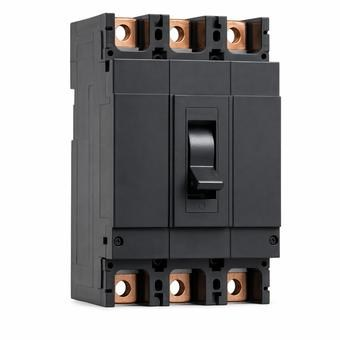

Interrupting Rating vs. SCCR: Two Different Questions
One is a device’s ability to break fault current and stop it. The other is an assembly’s ability to be subjected to that current without becoming a hazard. They are different numbers, set by different code sections, and meeting one says nothing about the other.

Key takeaways
- Interrupting rating is about a device clearing fault current. SCCR is about an assembly withstanding it. Both must exceed the available fault current.
- NEC 110.9 governs the first, NEC 110.10 the second. They are separate requirements and a design can satisfy one and fail the other.
- An assembly SCCR is set by its weakest component, not by its breaker. A 65 kA breaker in a panel with a 5 kA control relay does not make a 65 kA assembly.
- Both are checked against available fault current at that point, which means a fault-current study, not an assumption.
On this page · 7 sections
Two different questions
Ask what happens during a bolted fault and there are two things to establish, and they are genuinely separate.
The first: can the protective device break this current and stop it, without failing in the attempt? That is the interrupting rating, often marked AIC, and it belongs to the overcurrent device alone. A breaker marked 65 kA can interrupt 65,000 A of prospective fault current and remain a breaker afterwards.
The second: can everything else in the circuit be subjected to that current, for however long it takes the device to clear, without becoming a hazard? That is the short-circuit current rating, or SCCR, and it belongs to an assembly: a panel, an industrial control panel, a motor controller, a piece of equipment. It is a withstand rating, not a clearing rating.
Nothing about the first answers the second. A device can clear a fault beautifully while the enclosure it sits in is destroyed by the same event, and that is precisely the failure the two requirements exist to prevent separately.
What the code requires
The NEC keeps these in adjacent sections, which is both convenient and a source of confusion.
110.9 addresses interrupting rating. Equipment intended to interrupt current at fault levels must have an interrupting rating at nominal circuit voltage sufficient for the current available at its line terminals. The phrase doing the work is at its line terminals: the figure is the fault current available at that specific point, not at the service, and not the utility’s headline number.
110.10 addresses the rest. The circuit impedance, equipment short-circuit current ratings and other characteristics must be selected and coordinated so that the protective devices can clear a fault without extensive damage to the electrical components of the circuit. This is the withstand requirement, and it reaches everything in the fault path rather than just the device at the top of it.
So a compliant design has to answer both. 110.9 is satisfied by picking a device with enough interrupting rating. 110.10 is satisfied by establishing that the assembly and the components in it can take what passes through before the device clears.
The weakest component sets the SCCR
This is where the practical errors concentrate, and it is the same logic as the fitting that limits an enclosure rating.
An assembly’s SCCR is determined by the lowest-rated component in the fault current path, not by the largest breaker in it. A control panel containing a 65 kA main breaker, a 10 kA rated contactor and a 5 kA rated control relay has an assembly SCCR of 5 kA. The breaker’s 65 kA is real and relevant to 110.9; it does nothing for the assembly rating.
That has a consequence that surprises people: improving the SCCR of an industrial control panel is usually not a matter of buying a bigger breaker. It is a matter of finding and replacing the one small component that set the number, or protecting it with a current-limiting device ahead of it so that what reaches it is less than what is available upstream.
Industrial control panels are required to be marked with their SCCR precisely so this is checkable, and a panel whose marked rating is below the available fault current at its point of installation cannot be installed there.
Where series ratings fit
A series rating is a tested combination in which an upstream device limits what reaches a downstream device, letting the downstream device be applied above its own standalone interrupting rating.
It is worth being clear what that does and does not change. A series rating is a way of satisfying 110.9 for the downstream device using a tested, listed, specific pairing — not a calculation, and not transferable to a different combination of manufacturers or frames. It does not convert into an assembly SCCR, and it does not relieve the 110.10 requirement for everything else in the path.
The failure mode is substitution. A series-rated combination is valid only as the exact pairing that was tested and is marked on the equipment; swapping the upstream device for an equivalent from another manufacturer voids it silently, and nothing about the installation looks different afterwards.
The number both are checked against
Both requirements compare a rating against the available fault current at a point, so both depend on actually knowing that figure.
Available fault current falls as you move away from the source, because conductor impedance and transformer impedance limit it. That means the governing number is different at the service, at a downstream panel and at a piece of equipment at the end of a long feeder — and a device that is inadequate at the service may be entirely adequate thirty metres downstream.
It also means the common shortcuts are unsafe in both directions. Using the utility’s available fault current everywhere is conservative but can force expensive equipment where it is not needed. Assuming a comfortable figure without a study is the dangerous direction, and transformer replacements are a frequent cause of a previously adequate installation no longer being so: a larger transformer with lower impedance raises available fault current throughout everything downstream of it.
Common mistakes
Treating a breaker’s interrupting rating as the assembly’s short-circuit current rating. Reading 110.9 and 110.10 as one requirement, or assuming satisfying either one satisfies both. Determining an industrial control panel’s SCCR from its largest device rather than its smallest. Trying to raise a panel SCCR by upsizing the main breaker. Substituting an equivalent upstream device into a series-rated combination. Using the utility’s fault current figure at every point in the system. Leaving the fault-current study unrevised after a transformer is replaced with a larger or lower-impedance unit.
Frequently asked questions
What is the difference between interrupting rating and SCCR?
An interrupting rating is a protective device’s ability to break fault current and stop it, and belongs to the device alone. A short-circuit current rating is an assembly’s ability to be subjected to that current without becoming a hazard while the device clears, and belongs to the whole assembly. Both have to exceed the available fault current at that point, and meeting one says nothing about the other.
What do NEC 110.9 and 110.10 each require?
NEC 110.9 requires that equipment intended to interrupt current at fault levels have an interrupting rating sufficient for the current available at its line terminals. NEC 110.10 requires that circuit impedance, equipment short-circuit current ratings and other characteristics be coordinated so the protective device can clear a fault without extensive damage. The first is a clearing requirement on the device; the second is a withstand requirement on everything in the path.
Does a 65 kA breaker give a panel a 65 kA SCCR?
No. An assembly’s SCCR is set by the lowest-rated component in the fault current path. A panel with a 65 kA breaker, a 10 kA contactor and a 5 kA control relay has a 5 kA assembly rating. Raising it usually means replacing the component that set the number or adding a current-limiting device ahead of it, not fitting a larger breaker.
Can a series rating be used to satisfy SCCR?
No. A series rating is a tested, listed combination that lets a downstream device be applied above its own standalone interrupting rating, which addresses NEC 110.9 for that device. It does not establish an assembly SCCR and does not relieve the 110.10 withstand requirement for the rest of the path. It is also valid only as the exact pairing marked on the equipment, so substituting an equivalent upstream device voids it.
Next steps
The study that produces the fault-current figure both ratings are checked against is covered in short-circuit studies and breaker coordination, and the tested combinations themselves in fully rated vs. series rated.
Run the numbers
- Fault Current CalculatorThe available fault current both ratings are compared against.
- Transformer Sizing CalculatorThe upstream impedance that sets it.
Cite or link to this guide
Free to quote with attribution. Suggested citation: Voltfield Editorial Team, “Interrupting Rating vs. SCCR: Two Different Questions,” Voltfield, updated November 3, 2026. https://voltfield.org/guide-interrupting-rating-vs-sccr.html
Get new guides by email
One short email when a new guide or calculator is published, at most once a month. Your address is used for nothing else.